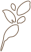

Art
Theme
実在する人物や動物または空想上の生き物を1つ取り上げ、その写真にPhotoshopでポスタリゼーション加工を施し、色彩計画を立てる。
それを参考に、水張りしたケント紙とアクリルガッシュを用いて、立体感を意識した着色に仕上げ、主に使用した色をカラーチップにし並べて貼るという課題だ。

Episode
画像に映るのは、被写体モデルとして活動している「藤原しお」という女性である。この課題に取り組む少し前にSNSで見かけ、容姿だけでなく性格も愛らしい人であることを知った。
折角のこの機会に私の手で彼女を描きたいと思い、本人へ連絡したところ快く了承してくださったため、冬生まれの彼女の冬に見せた美しい姿が印象的な、この1枚を基に制作した。
SNSには当時、フォトグラファーである恋人の撮った、彼女の日常が数多く掲載されていた。その中の1つをイラスト化することができ、また完成した作品を多くの方から褒めて頂けて、大変嬉しく思う。
20h
2021/8
Theme
自身の手で「喜怒哀楽」を表現する課題。ポーズや構図を自由に、B3ケント紙に鉛筆のみで描写する。

Episode
「哀」と「楽」が手を取り合おうとしているかのように見える構図で描いた。これがデッサンの授業での最終課題であったため、今まで以上に気合を入れて取り組んでいる。
制作した教室が真横から日の差すつくりで、陰影の付け方に苦労した。立体的に見えるよう、ひたすらに線を描き込んでいくのは根気がいるが、心から楽しめる時であった。（左上：哀 左下：喜 右上：怒 右下：楽）
18h
2020/8-9
Theme
一眼レフの扱い方を学ぶ授業の最終課題である。これまでに静物や風景、人物と撮影を重ねて身に付けたスキルを使いこなし、一眼レフにこだわった「写真での表現」に取り組む。

Episode
当時飼っていたうさぎで「アルバム」を作成した。ネザーランド・ドワーフという種類でオランダに起源を持ち、小柄で人懐っこく好奇心旺盛な性格が特徴のうさぎだ。
尻尾を振りながら元気いっぱいに床を掘ったり、撫でられて気持ちよさそうに目を瞑ったりと、愛らしい姿を多く見せてくれた。明るい性格で喜びを全身で表現してくれるため、楽しい時を過ごすことができた。
彼は背部が茶色く腹部が白いため、右下のように全身を伸ばし撫でられるのを待つ姿は、さながらコッペパンである。そんな、可愛らしさ溢れる彼の「日常を切り抜くこと」を意識して取り組んだため
私が普段目にしていた自然な姿を、そのまま写真に収めることができた。特に、彼のまん丸としたしっぽがお気に入りのため、つい半数近くがしっぽに寄った写真になってしまった。
6h
2021/9